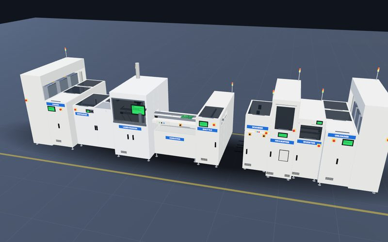

Board handling line — loader to unloaderSTART HERE
Nine handling machines connected into one line: boards leave the magazine loader, get a laser-marked 2D code, split onto two lanes, are scanned, buffered, flipped and pushed back into magazines. Live state for every machine and the line output rate. Switch to any single machine from the bottom bar.
BASIC KNOWLEDGEHandling machines do not change the board; they move, buffer, turn and identify it so the process machines never wait. They talk to each other through the SMEMA "board available / machine ready" handshake.